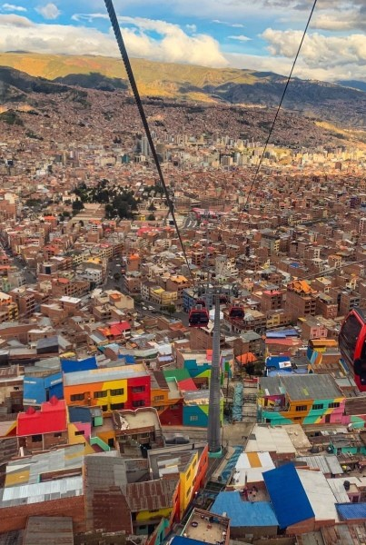
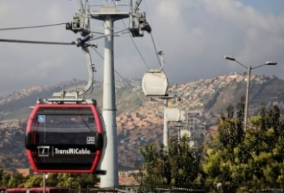
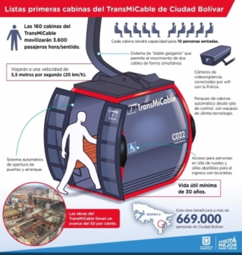
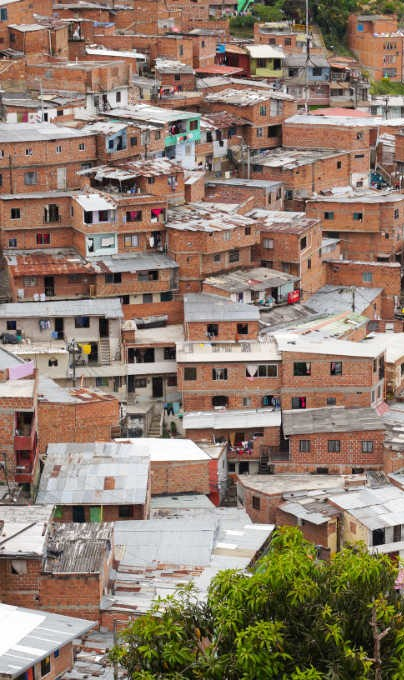

Bogotá, Columbia
Bogotá, the sprawling and dynamic capital of Colombia, is a city that captures the essence of both the nation and South America as a whole, nestled high in the Andes Mountains at an altitude of over 2,600 meters (8,600 feet) above sea level.
The city celebrates its rich heritage through music, art, and festivals while embracing innovation and creativity. Surrounded by stunning natural landscapes, Bogotá is not only a gateway to Colombia's diverse regions but a destination in itself, offering visitors a taste of Colombian culture, history, and urban sophistication.
The Localities of Bogotá
Bogotá, the sprawling capital of Colombia, is a city of remarkable diversity, both in its culture and its neighborhoods, known locally as "localidades." Each of these localidades is like a microcosm, offering a unique glimpse into the multifaceted character of the city.
As of 2021, The city of Bogotá was divided into 20 localities, each with its own unique character and neighborhoods.
World Famous TransMilenio BRT System
TransMilenio, Bogotá's Bus Rapid Transit (BRT) system, stands as a cornerstone of the city's urban transportation network. Launched in 2000, it has revolutionized the way commuters navigate the Colombian capital. With its dedicated bus lanes, TransMilenio offers a streamlined and efficient mode of transportation, significantly reducing travel times and minimizing the perennial traffic congestion that plagues Bogotá. Its extensive network links various neighborhoods, commercial hubs, and cultural centers, providing accessibility and affordability to a diverse population. Moreover, TransMilenio's environmental impact is noteworthy, as it contributes to improved air quality and reduced greenhouse gas emissions by encouraging the use of public transit. Beyond its local significance, this system has earned international recognition, serving as a model for cities worldwide seeking innovative solutions to urban transportation challenges.
Key Site : Ciudad Bolivar
Ciudad Bolívar, located in the southern part of Bogotá, is a suburban locality known for its distinctive character. Unlike the bustling urban districts in the north, Ciudad Bolívar offers a different perspective on life in the Colombian capital.
Ciudad Bolívar is characterized by a mix of residential areas, including informal settlements and low-income neighborhoods. It's a locality that reflects some of Bogotá's socioeconomic challenges.

Ciudad Bolivar : TransMicable

The topography and limited road access of Ciudad Bolivar posed significant transportation challenges to its residents, thus in 2018, a cable car system known as TransMiCable was put into use.
With one line and four stations, this innovative cable car system has since become a crucial part of Bogotá's public transportation network, providing improved connectivity to various under-privileged neighborhoods.

Ciudad Bolivar

Despite ongoing efforts to address the challenges of economic inequality, violence, inadequate infrastructure, limited educational opportunities through infrastructure development and social programs, the district continues to grapple with these multifaceted issues, requiring sustained collaboration between government agencies, NGOs, and the community.